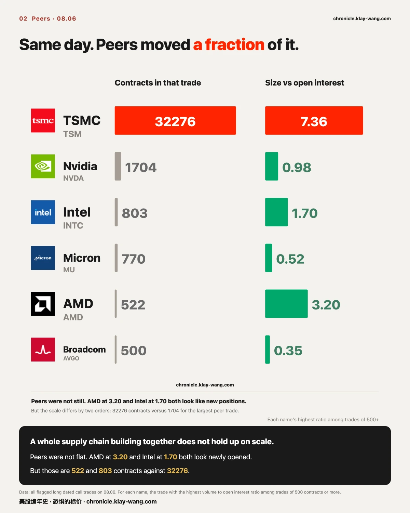
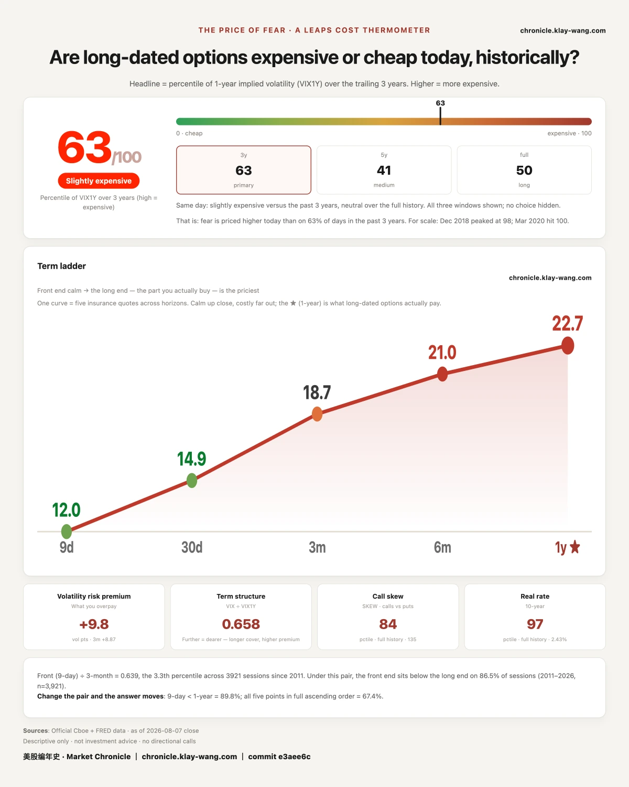

TSMC went from ignored to wanted overnight, 08.07

Three lines
- On 08.06 one TSMC strike expiring 12.18 traded 32276 contracts, while the entire strike held just 4383 open contracts entering that day. One day's volume ran 7.36 times the open interest standing there.
- By contract count it was the largest long dated call trade of the session: second place was TSMC's own other strike at 19977, and third place only 6176, under a fifth of it.
- But how much of it stayed, we cannot say. That ruler cannot be read this time. It arrives on 08.08. When we cannot answer, we say so.

1. Taking one large trade apart, step by step
In one line: this section pulls a single large trade apart end to end, so you can do the same with any other.
Step one: measure it against the open interest, not against your intuition.
Thirty thousand contracts sounds large, but large needs a reference. The best reference is what that strike had already accumulated.
On 08.06, TSMC's 12.18 expiry, strike 560 call traded 32276 contracts. Entering that day, the whole strike held only 4383 live contracts. One day's volume ran 7.36 times the open interest.
Same day, same expiry, strike 500 traded 19977 against 8538 open, a ratio of 2.34. High, but an order apart.
That multiple measures scale, not outcome. It says how large the day was against everything the strike had built before. It does not say how much of it stayed.
Step two: separate volume from position building.
Volume is not position building. A contract trades when two people open, when one opens and one closes, or when the same people open and close within the day. All three look identical in the volume figure.
There is exactly one way to tell them apart: open interest after the overnight settle. It is the count of contracts still alive, it settles once after each close, and it cannot be inflated. Next day's open interest minus today's, divided by volume, is the retention rate.
We have used that ruler and it worked. A SanDisk strike expiring 08.07 traded 6477 contracts on 08.05, and open interest went from 1684 to 2144, up only 460. A retention rate of 7.1%, with 9.7% on the put side. Over ninety percent opened and closed the same day. That money was not a position, it was flow.
For TSMC this time, that ruler cannot be read. Those strikes cleared the anomaly threshold on 08.06 but not on 08.07, so we hold no next day open interest and cannot take the difference. We also asked the broker's live quote directly and got figures identical to our 08.06 capture across three strikes, which means that column has not yet taken in 08.06's trading.
So we publish no retention rate this issue. We can speak to the 7.36 multiple. We cannot speak to what stayed.
This is not modesty. The two are genuinely different measurements: one says how large the day was, the other says what the day left behind. Treat the first as the second and you have mistaken activity for a position. The 08.08 figures will settle it and we will come back.
Step three: convert it into units you already understand.
One contract covers 100 shares. 32276 contracts is 3.2276 million shares. At that strike, notionally $1.807 billion of TSMC stock; at the 08.07 close of 420.04, $1.356 billion.
The premium paid was $35.7 million.
A note on that figure: premium equals contracts times that day's close times 100, not an average of individual fills. On a wide range day the method distorts; TSMC's 08.06 range was narrow, so the estimate is reasonable, but the method has to be stated.
A correction. Our 08.06 issue put that strike's premium at $36.3 million. Recomputed under the method just stated, the correct figure is $35.7 million. We overstated it by 1.7%. The number had been typed in by hand rather than computed, so nothing existed that would have caught it. The published issue stands uncorrected; this dated erratum is the record. For the 500 strike we could not retrieve a close today, so that figure and the two strike total are both withheld.
Why it is worth logging: tens of millions bought well over a billion in notional exposure. That is the fundamental difference between options and stock. It is not cheap stock. It is leverage with an expiry date. On that date it either pays or it goes to zero. There is no third outcome, and no option to simply hold and wait.
Step four: work out how many kinds of participant produce this shape.
Opening is two sided. A new contract requires a buyer and a seller opening at the same moment. So rising open interest is true of both sides at once.
These four produce an identical shape in the data:
One, someone betting it rises. They expect the price above that strike by expiry.
Two, a market maker filling an order. Someone buys, so the maker is the seller. That is not a bearish view, it is a fill. Afterwards they buy stock to hedge. A market maker's position expresses what someone else ordered, not what they think.
Three, a holder selling covered calls. An institution already long TSMC, seeing limited near term upside, is willing to sell at that strike and take cash now. That is simultaneously bullish on holding and a cap on upside.
Four, one leg of a spread. Institutions rarely buy far out of the money outright. They buy one strike and sell a higher one, at far lower net cost. What you see may be one leg, with the other never crossing the threshold.
We did not measure which side of the spread the trade hit, whether legs were combined, or how concentrated it was. So none of the four can be ruled out.
The line between measurable and not sits exactly here: whether money stayed is measurable; who initiated it and on which side is not.
Step five: ask why this name.
Liquidity. TSMC's option chain trades across every expiry month, from weekly out past a year. A thirty thousand lot order first needs a market that can absorb it.
Volatility neither high nor low. At the 08.07 close, thirty day implied volatility was 42.09 and one year 46.5, and that reading sits at the 51.4th percentile of its own recent distribution. Dead centre. That position matters: too low and selling raises nothing, too high and buying costs too much. In the middle, both sides will sit at the table.
A clear price structure. On 08.07 the walls stood at 400 below and 420 above, and the close was 420.04, right against the upper one.
Step six: come back the next day and check for follow through.
On 08.07, the only strike in that expiry to clear the threshold again was one below. Neither of the 08.06 strikes crossed again. The stock closed 420.04, up 0.44%.
That is a fact, not a judgment. It could mean the position is complete, it could mean more is coming, it could mean the remaining size was not large enough to flag. We record only that it did not cross again.
Step seven: write down what would make this wrong.
First claim: by contract count, the 08.06 trade was the largest long dated call of the session, and one day's volume ran 7.36 times that strike's open interest.
What voids it: if the 08.08 settle shows a low retention rate on that strike, say under twenty percent, this reads as churn rather than position building, and every statement about scale above has to be reweighed.
Second claim: the supply chain building together does not hold up on scale.
What voids it: if peers show new positions of the same order over the coming sessions, not hundreds of contracts but tens of thousands, the isolation claim is void.
08.08 settles the first one, and we will come back to it.

2. The other names
In one line: other names moved the same day, but not in the same way.
Semiconductor peers: not still, but two orders smaller.
The easy story is that someone is betting the AI supply chain keeps beating. If so, the same day should show it in other names too. We split 08.06's flagged long dated trades by name and took each one's most new looking trade, the highest volume to open interest ratio among trades of at least 500 contracts:
| Name | Most new looking trade | Volume to open interest |
|---|---|---|
| TSMC | 32276 contracts | 7.36 |
| Nvidia | 1704 | 0.98 |
| Intel | 803 | 1.70 |
| Micron | 770 | 0.52 |
| AMD | 522 | 3.20 |
| Broadcom | 500 | 0.35 |
Movement was not zero. AMD at 3.20 and Intel at 1.70 both sit in new position territory.
But the scale differs by two orders. TSMC's trade was 32276 contracts against a largest peer trade of 1704, and that one was Nvidia's, at a ratio of 0.98, pure churn.
Nvidia is the one worth reading. It was the busiest name on the board with 31 flagged long dated entries, yet its largest trade by volume, 5468 contracts, ran a ratio of only 0.18, and even its most new looking trade reached just 0.98. Busy, yes. But the money changed hands in place. Nothing was added.
This is a negative result. It does not tell you what the money intends. It tells you one explanation can be crossed off. Nobody enjoys writing these, because they do not sell. But discernment starts with crossing things off.
08.07 itself: the money sat almost entirely on next Thursday.
Aggregating 08.07's closing round of flagged trades by name, the top four:
| Name | Flagged premium that day |
|---|---|
| SPCX | $201 million |
| Nvidia | $79.7 million |
| Tesla | $61.2 million |
| Micron | $14.7 million |
Almost all of it expires 08.14, next Thursday. And the four shapes are four different things.
SPCX is a full ladder. Strikes 110, 115, 120, 125, 130, 135 and 140 all cleared, and the higher the strike, the higher the ratio: 0.91 at 110, rising to 4.91 at 140. The lower rungs look more like churn within existing positions, the upper rungs more like newly opened ones.
Tesla had two adjacent strikes hit together. 330 and 335, at 5.17 and 7.28, both far above 1. Two neighbouring strikes showing that at once is not turnover inside an existing book.
Nvidia was busy without adding. The 210 strike ran 1.90, while the 225 strike traded 35081 contracts at a ratio of only 0.92. Same name, same expiry, one strike looking new and one looking like churn.
Micron was the simplest. One strike, 900 calls, 4189 contracts, ratio 2.31.
Four completely different shapes on a single day. TSMC, one strike dominating, four months out. SPCX, a seven step ladder into next week. Tesla, two adjacent strikes opened together. Nvidia, loud but changing hands in place. Collapse all of that into one sentence about money getting long tech and the sentence says nothing at all.
This section stops at shape. The four kinds of participant from step four apply here in full, and not one of them has been ruled out.

Thermometer
The Fear-Price Index read 63.4 on 08.07, with one year volatility at 22.66.
The thermometer measures one thing: what the market currently pays to insure the next year. The dearer the insurance, the more the market is afraid. A reading of 63.4 means it is dearer than on 63% of days in the past three years.
It fell for four straight sessions and ticked back on payrolls day: 68.1 on 08.03, 67.9 on 08.04, down to 63.6 on 08.05, 61.5 on 08.06, and back to 63.4 on 08.07.
This number is not for the people buying protection. It is the price quoted by the people selling it. It says nothing about next week. It says what those who must quote a year ahead, and who pay when they quote wrong, were charging on 08.07.
Options activity, name by name → chronicle.klay-wang.com/options
The thermometer and both ledgers → chronicle.klay-wang.com
Both pages update automatically after each close, carry their date, and cannot be edited afterwards.
No investment advice. No direction calls. No market timing.